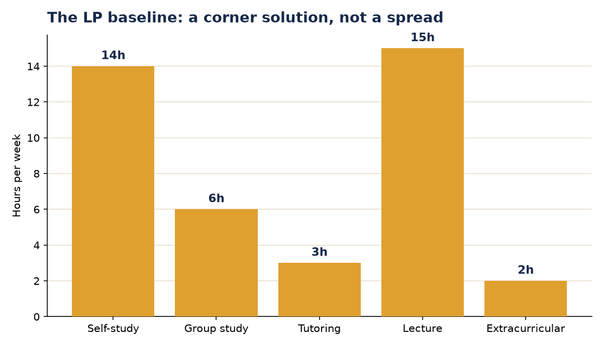
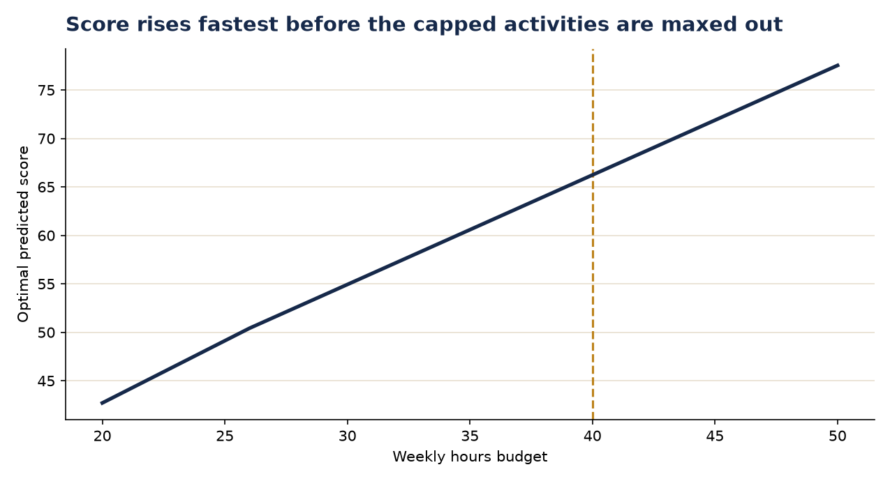
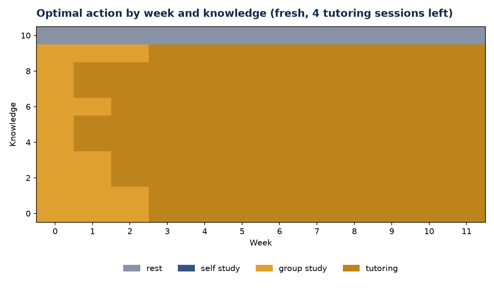
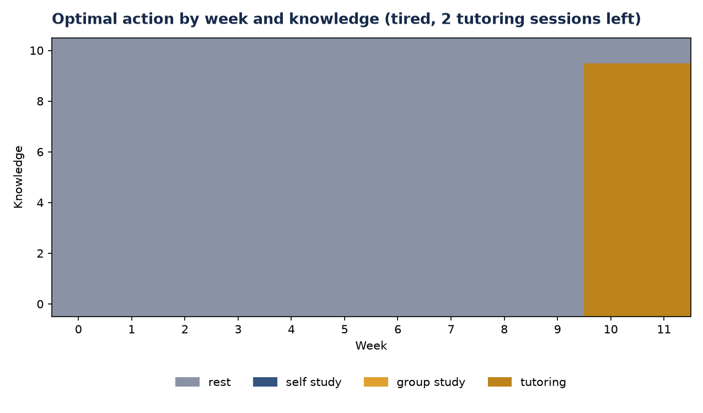
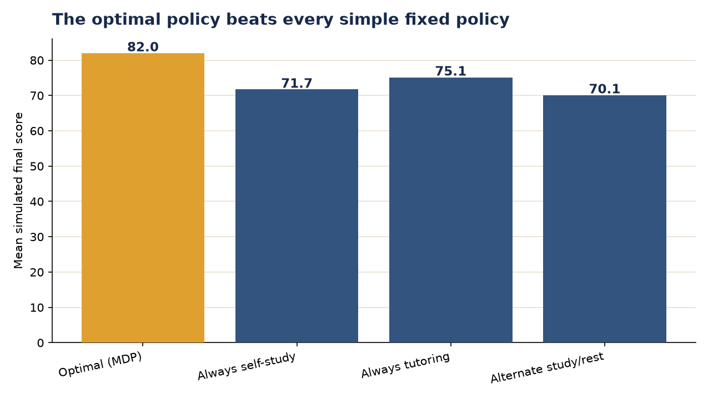
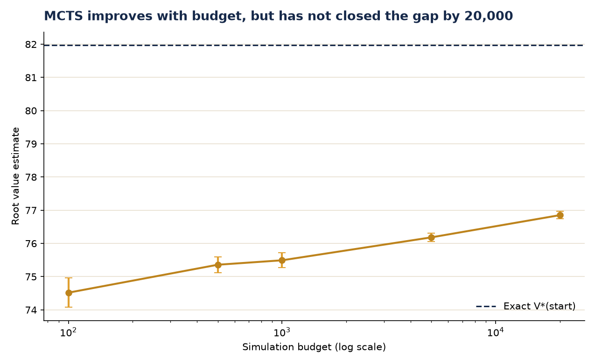
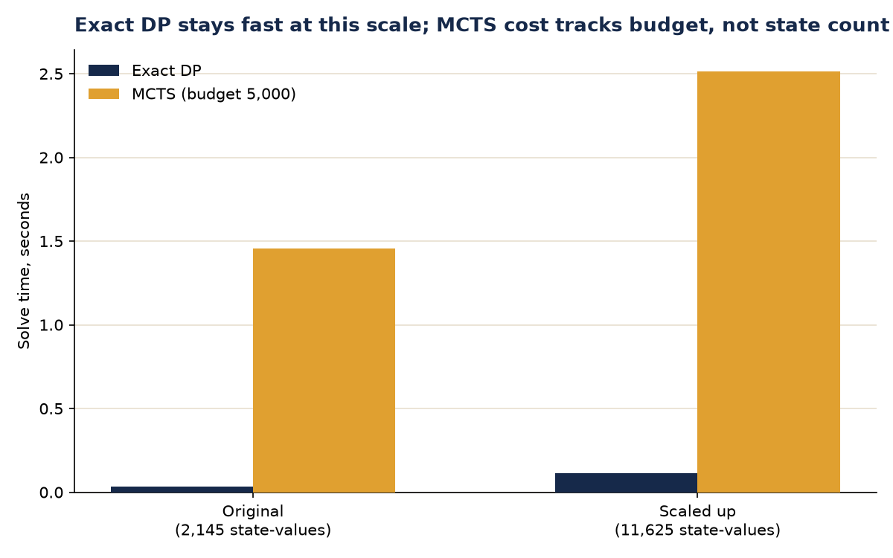
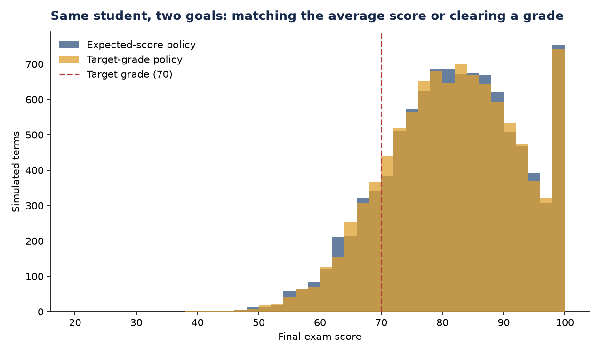
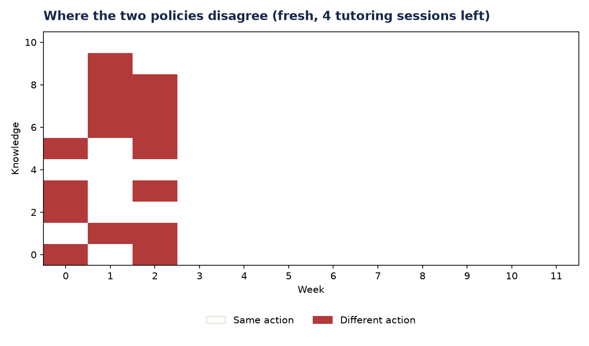
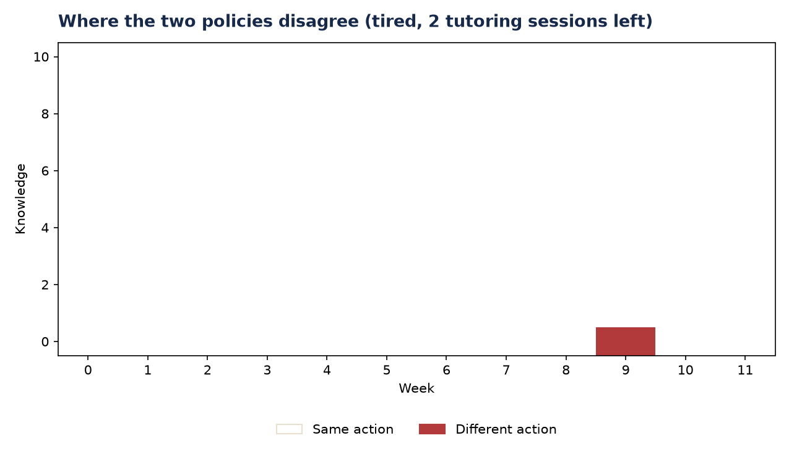

Project I asked what drives exam scores. This project asks a different question given that model: how should a student spend a limited term to get the best result, once the world is uncertain and decisions unfold week by week rather than all at once?
This project reuses Project I's fitted regression coefficients and its dataset of 320 synthetic students wherever it can, since those are the one part of this exercise that is genuinely known. Everything Project I never modelled (a term unfolding over time, uncertainty, fatigue, a limited number of tutoring sessions) has to be added as an explicit assumption. Every parameter used from here on is labelled, in the code and on this page, as either from Project I or an assumption for this project, so the two are never quietly blurred together.
Project I's signature move was checking whether standard regression could recover a set of relationships that were deliberately programmed into a synthetic dataset. This project applies the same discipline one level up: can an approximate planning method (Monte Carlo tree search) recover a known optimal decision, computed exactly by dynamic programming? Same validation-against-ground-truth logic, applied to a decision rather than a coefficient.
The scenario is a student with a fixed 12-week term and a choice, every week, between self-study, group study, tutoring (a limited resource, only 4 sessions exist all term) and rest. The same underlying scenario is modelled at four increasing levels of realism:
Demonstrates: framing a planning problem so it can be checked against a known-correct answer, the same discipline Project I applied to a regression.
Plain language first: a Markov decision process just says that being in some situation (a state) and taking some action leads, with known probabilities, to a new situation and eventually to a final outcome. The value of a state is the best average outcome achievable from there, found by asking, for every possible action, what its own expected future value would be, and taking the best one. Solved backward from the last week to the first, that single idea (the Bellman equation) gives a provably optimal plan for every possible situation at once.
State $(t, k, f, s)$: week $t \in \{0, \dots, 12\}$, knowledge $k \in \{0, \dots, 10\}$, fatigue $f \in \{0, 1, 2\}$ (fresh, tired, exhausted), tutoring sessions remaining $s \in \{0, \dots, 4\}$. Actions $a$: self-study, group study, rest, and tutoring only when $s > 0$.
The terminal reward (45 at zero knowledge, 95 at full knowledge) is calibrated to span roughly Project I's own observed exam score range. Working backward from week 12 to week 0, this equation is solved exactly at every one of 2,145 state-values, in about 0.02 seconds.
$\bar{Q}(a)$ is the average return seen so far from trying action $a$ (exploitation). The second term grows for actions tried relatively rarely, pulling search back toward them before the tree commits too early to an action that only looked good by chance (exploration). $c$ controls the balance. Classic UCB1 sets $c = \sqrt{2}$ for rewards scaled to $[0,1]$; this problem's terminal rewards span roughly 45 to 95, so a small empirical sweep against the known exact value (see Validation and Problem-Solving, below) was used instead, settling on $c = 5$.
Demonstrates: formalising a planning problem as an MDP, and the exploration/exploitation trade-off that governs simulation-based search.
Plain language first: if hours simply added up with no diminishing returns and no uncertainty, the best plan is not a balanced spread of hours. It is to max out every capped, high-value activity and pour every remaining hour into whichever single activity is best, hitting the weekly budget exactly. That corner solution, not a balanced timetable, is the signature of a linear model, and it is exactly why Stage 2 introduces uncertainty and uneven capacities.
Decision variables (hours per week): self-study $x_1$, group study $x_2$, tutoring $x_3$, lecture $x_4$, extracurricular $x_5$.
The coefficients on $x_2$ and $x_3$ are Project I's Group study (+1.83 per week) and Tutoring (+5.56 per week) bonuses, converted from a fixed weekly premium into a per-hour one by dividing by the mean weekly study hours in Project I's dataset (11.91 hours, an assumption for this project). $x_4$'s coefficient rescales Project I's attendance coefficient (+0.28 per percentage point) into per-lecture-hour terms, given 15 scheduled hours a week.
Solved with scipy's HiGHS method.


Every capped activity (lecture, tutoring, group study) is maxed out, extracurricular sits at its forced minimum, and self-study absorbs the remaining 14 hours, a corner solution rather than a spread. Re-solving at 41 hours confirmed the shadow price exactly (score rose by exactly 1.13), and a coarse brute-force grid search over feasible allocations matched the LP's own score to floating-point precision (55.27 both ways, excluding the intercept).
Project I's regression estimated a sleep coefficient of +0.40 (not significant, p = 0.295), missing the true, programmed penalty of −1.80 points per hour of sleep below six. The LP here can only see what Project I's regression estimated, not the true generating model, so it cannot see a real sleep effect either. That is exactly why sleep sits outside the weekly hours budget entirely, as a fixed constraint rather than something the LP optimises: a model can only trade off what it can see, and this model cannot see sleep.
Demonstrates: linear programming formulation and duality (shadow prices), validating an optimiser two independent ways, and tracing a limitation in Project I's own regression through into this project's model.
Plain language first: the optimal policy is not "study as much as possible." It is "study with the highest-success-rate action available, and rest first when there is enough term left to recover, since a fresh student learns far more per session than a tired one." A second, more surprising finding: self-study is never the optimal choice anywhere in the 2,145-state policy, because group study carries no weekly capacity limit at this stage (unlike Stage 1's 6-hour cap) and has a higher success probability, so it dominates self-study outright, a real property of this model, not an error.

Fresh, with tutoring sessions available, the policy studies from week one: group study while knowledge is still low, tutoring for almost the rest of the term. Rest never appears here, since there is no fatigue yet to recover from.


Starting tired with most of the term still ahead, the policy rests almost throughout, then studies intensively only in the final two or three weeks: a fresh student succeeds far more often per session (fatigue multiplies success probability by 0.75 when tired, 0.4 when exhausted), so recovering early and cramming at full effectiveness later beats studying continuously at reduced effectiveness. Against three simple fixed policies (always self-study, always tutoring, alternate study and rest), the optimal policy wins by a wide margin: 82.0 against 71.7, 75.1 and 70.1.
Demonstrates: dynamic programming, backward induction, and validating an exact solver against both a Monte Carlo simulation and simple baseline policies.
Plain language first: Monte Carlo tree search, given only a simulator and never the exact answer, picks the same action as the exact optimal policy about three quarters of the time, and its mistakes are nearly free (a fraction of a point lost, on average) rather than costly. Its own estimate of how good a state is converges toward the true value as the search budget grows, but only slowly: a 12-week horizon with several stochastic outcomes per action is a large tree to explore, and 20,000 simulations still leave a real, measured gap.

The root value estimate rises steadily with budget (74.5 at 100 simulations to 76.9 at 20,000), moving the right direction, but a real gap to the exact 81.98 remains even at the largest budget tested. With about four actions and several stochastic outcomes each, the tree's width grows faster than its depth: at 20,000 simulations, most trees only reach full depth by around week 6 to 8 of 12, leaving the rest of every simulated term to a fully random rollout, which drags the average down. That is also why even the very first decision disagrees between the two methods (MCTS recommends tutoring, the exact policy says group study), a near-tie rather than a clear mistake.

Scaling the problem up 5.4 times (24 weeks, knowledge to 30, 11,625 state-values against the original 2,145) barely moves exact DP's solve time (0.02 to 0.10 seconds), while MCTS's own cost tracks its search budget, not the state-space size. Reported honestly: at the size actually modelled here, exact dynamic programming remains the right tool, and MCTS's real advantage would only show up once the transition model itself became too large to solve in closed form, not simply from a longer term or a finer knowledge scale.
Demonstrates: Monte Carlo tree search (UCT/UCB1), handling stochastic transitions without a separate chance-node type, and being explicit about when an approximate method is, and is not, the right tool.
Plain language first: aiming to clear a specific grade rather than maximise the average leads to a genuinely different policy, not just a relabelling of the same one. But the practical difference in outcomes is small and exactly where you would expect it: the risk-sensitive policy trades a sliver of average score for a noticeably better worst case.
Re-solving the identical Bellman equation with this terminal reward, using Project I's true exam noise (SD = 7.5) and the standard normal CDF $\Phi$, gives the policy that maximises the probability of reaching the target grade, rather than the average grade itself.
| Policy | Mean score | P(score ≥ 70) | 5th percentile | Worst-decile mean |
|---|---|---|---|---|
| Expected-score (Stage 2) | 81.82 | 85.3% | 63.10 | 62.05 |
| Target-grade (Stage 4) | 81.78 | 85.5% | 63.72 | 62.38 |
116 of 1,980 decision states (5.9%) choose a different action at target 70, including the very first decision of the term (expected-score policy picks group study, target-grade policy picks tutoring). Sweeping targets from 50 to 90 found disagreement at every threshold tested, from about 100 to 190 states, generally growing at stricter targets.



Fresh at the start of term, the two policies disagree only in the first two or three weeks, always agreeing from week 3 onward at this fatigue and session count. Starting tired with sessions already partly used, they disagree at only a single state in the whole term. The risk-sensitive objective mostly changes opening moves, not the whole-term strategy, and how much it changes depends heavily on where a student already stands.
This is one simple form of risk-sensitive decision-making: maximising the probability of clearing a fixed threshold. More general approaches, such as optimising a risk measure like CVaR (the expected shortfall in the worst outcomes, rather than just their probability), are a natural next step beyond what is modelled here.
Demonstrates: reformulating an MDP's objective without changing its structure, and quantifying a risk/return trade-off with real simulated outcomes rather than asserting one exists.
Plain language first: these methods are not really competing to give the best answer, they answer different questions under different assumptions. Comparing their scores directly would be comparing answers to different questions, so the table is only honest read alongside what each method actually assumes.
| Method | Assumes | Output | Score |
|---|---|---|---|
| LP (Stage 1) | Deterministic, linear, no uncertainty | One fixed weekly hour allocation | 66.23 predicted |
| MDP, exact (Stage 2) | Known transition probabilities; state space small enough for exact DP | Full policy, every state | 81.98 exact, 82.01 simulated |
| MCTS (Stage 3) | Only a simulator needed; approximate | One action, must be rerun for every decision | 80.30 simulated, replanning weekly |
| Target-grade, exact (Stage 4) | Same as the exact MDP, different goal (P(score ≥ 70), not the average) | Full policy, every state | 81.78 mean, 85.5% P(≥70) |
Compute cost is not a fair ranking across this table either: the exact MDP and the target-grade policy are each solved once (0.02 seconds) and cover every possible state, while MCTS costs about 1.4 seconds per single decision at a budget of 5,000, and that cost must be paid again for every new decision. The exact MDP's own solve time stays close to instant even at 5.4 times this problem's state-space size, which is precisely why it, not MCTS, is the method actually used for the recommendations below.
Every entry below is a genuine finding from the build log, not a tidied-up narrative written afterward. Two are real bugs, caught and fixed; the others are honest, checked findings the model produced that could easily have been mistaken for bugs, but were not.
The very first MCTS run printed a root value estimate of 0.0000, while the four action Q-values it was built from all looked sensible (73 to 76 points).
The backpropagation loop updated the visit count and per-action totals for every node on the simulated path, but never that node's own accumulated return, so every node's value stayed at zero except the one newly expanded leaf at the very end of the path, updated separately one line below the loop.
Added the missing accumulator update inside the same loop.
for n, a in path:
n.N += 1
n.W += return_value # the line that was missing
n.action_N[a] = n.action_N.get(a, 0) + 1
n.action_W[a] = n.action_W.get(a, 0.0) + return_valueWhat it shows: comparing a headline number against the components it was built from, rather than trusting either one in isolation.
The scale-up experiment's reported state-space size for the original problem was 1,980, not the 2,145 already reported in Stage 2.
The count multiplied states-per-week by the number of weeks before the term ends, missing the terminal week itself.
Added the missing week; the scaled problem's own count was already correct.
What it shows: cross-checking a number against the same number reported earlier, rather than assuming two independently written pieces of code would already agree.
Classic UCB1 sets $c = \sqrt{2}$, derived for rewards scaled to $[0,1]$. This problem's terminal rewards span roughly 45 to 95, so that value explores far too little in practice; a linear rescaling by the reward's range suggested something closer to $c = 70$, but tested directly this over-explored badly, giving a worse root-value estimate at the largest budget tested than smaller values of $c$. A sweep over $c \in \{1, 2, 5, 10, 20\}$ at budget 20,000 found $c = 5$ gave the highest root value, so that is what the rest of Stage 3 uses.
What it shows: a parameter derived from theory does not transfer automatically to a different reward scale, and the fix is to test candidates against a known answer rather than rescale by intuition alone.
Across all 2,145 states, the exact policy never once chooses self-study. This is a real consequence of how the scenario is built: Stage 1's linear programme capped group study at 6 hours a week, but Stage 2's weekly action choice carries no such capacity limit, so group study's higher success probability (0.57 against self-study's 0.50) dominates self-study outright with no offsetting cost. Left as found and reported honestly (see Stage 2, above), rather than adding a capacity constraint after the fact to make self-study reappear, which would have been tuning the model to look more expected rather than reporting what it actually does.
Plain language first: the exact policy's advice is not generic ("study more"), it is conditional on exactly where a student stands, and the two examples below show genuinely different advice for genuinely different situations, both read directly off the solved policy rather than argued in the abstract.
The exact policy's first move is group study, not tutoring and not self-study. Self-study never appears anywhere in this policy, and tutoring is deliberately held back early, since only 4 sessions exist for the whole term and group study is nearly as effective while knowledge is still low. Expect the policy to shift into tutoring within the first couple of weeks as knowledge builds.
Take a student in week 7, knowledge 3, fatigue exhausted, with 1 tutoring session left. The exact policy says rest, and keeps saying rest for every remaining week except the very last, where it finally spends the last session. A fresh student succeeds far more per session than an exhausted one, so recovering now and spending the one resource left at full effectiveness in the final week outperforms grinding through in between.
Both recommendations are read directly from policy[t][(k, f, s)] in the solved MDP, not argued from intuition.
Natural next steps: giving group study its own capacity limit in the MDP (closing the gap flagged in Validation and Problem-Solving), a heuristic rollout policy for MCTS instead of a uniformly random one, and a more general risk measure such as CVaR instead of a single fixed target grade.
Formulating and solving a constrained optimisation, reading and validating shadow prices two independent ways.
Formalising a sequential decision problem and solving it exactly by backward induction, at a state space where exact solving is genuinely feasible.
Implementing UCT/UCB1 from a simulator only, handling stochastic transitions without a separate chance-node type.
Checking every stage against an independent method: shadow prices against a re-solve and a grid search, the exact policy against simulation and fixed baselines, MCTS against the exact answer.
Reformulating an MDP's objective to maximise a probability rather than an average, and quantifying the resulting trade-off honestly.
NumPy, pandas, SciPy (linprog), Matplotlib, and a notebook that imports from shared modules and runs cleanly end to end.
Leading every section with the plain-language finding before the technical detail, and reporting genuine bugs and honest limitations rather than smoothing them away.